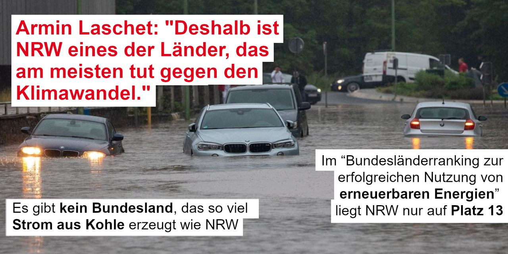

Armin Laschet, Ministerpräsident von Nordrhein-Westfalen und Head of CDU Deutschland.
Während sich die Partei auf den Wahlkampf vorbereitet, kümmern wir uns um die Inhalte.
Bei Armin-Laschet.Org handelt es sich um ein Satire Projekt. Wir gehören keiner Partei an und
sprechen auch keine Wahlempfehlung aus. Mehr Informationen über dieses Projekt
hier.
Immer wieder wird die CDU wegen ihrer problematischen Lobbykontakte kritisiert. Die Liste wäre zu lang, um alle Ereignisse zu thematisieren. Aber einige haben wir vorbereitet:
Landwirtschaftsministerin Klöckner (CDU) traf sich in ihrer Amtszeit mindestens 25 Mal mit Lebensmittelkonzernen wie Nestlé und Mars, aber nur 5 Mal mit Organisationen wie dem Bund ökologische Landwirtschaft. (Stand: 2019) Außerdem machte sie Werbung für Billigfleisch (Haltungsform 1) und Großkonzerne wie Nestlé oder Kaufland, unter anderem auf Regierungskanälen.
Der CDU-Wirtschaftsrat ist ein Lobbyverband. Dieser sitzt für Unternehmen wie Daimler, Deutsche Bank und E.on im CDU-Parteivorstand und profitiert von exklusiven Zugängen zur deutschen Regierungspartei. Lobbycontrol schreibt dazu: “Was viele gar nicht wissen und selten berichtet wird: Der Wirtschaftsrat ist – anders als sein Name vermuten lässt – gar kein Parteigremium, sondern ein Lobbyverband. Er ist als unternehmerischer Berufsverband organisiert und hat laut Satzung keinerlei formale Verbindungen zur CDU. Dennoch fungiert er als Scharnier zwischen Partei und Unternehmen: Der Wirtschaftsrat verfügt sogar über einen Sitz im CDU-Bundesvorstand, der sonst nur Parteifunktionär:innen vorbehalten ist. Das ist eine problematische Doppelrolle.”
Die Bundesregierung traf sich zwischen September 2015 und Mai 2017 fast zweieinhalb mal so häufig mit Autolobbyisten, wie mit Interessenvertreter:innen für Umwelt- und Gesundheitsschutz. Diese Info ist weder neu, noch besonders überraschend. Die laschen (lol Laschet) Klimaziele im CDU Parteiprogramm haben damit aber bestimmt nichts zu tun ;)
"Auf der einen Seite ist das Mädchen bewundernswert, aber auf der anderen Seite ist sie krank”. Dieses Zitat stammt aus einem Interview mit Friedrich Merz gegenüber der “Augsburger Allgemeinen”. Merz versucht Kritik an Thunbergs UN-Rede zu üben, zeigt aber die  Handlungsunfähigkeit von hochrangigen CDU Politiker:innen, wenn es um die Bekämpfung des menschengemachten Klimawandels geht.
Das Wahlprogramm der CDU wurde mehrfach diskutiert. Neben sozialen Fragen wurde vor allem die Planlosigkeit bei der Bekämpfung der Klimakrise kritisiert. Die Hauptkritikpunkte von Umweltschützer:innen sind:
Wissenschaftler:innen fordern seit Jahren ein härteres Vorgehen im Kampf gegen die Klimakrise.
Dies sagte Armin Laschet im Hochwasser-Katastrophengebiet Hagen 2021. Das Problem: Studien zeigen, dass NRW im Vergleich mit anderen Bundesländern eher im Mittelfeld liegt. In einigen Punkten fällt die Bilanz noch schlechter aus. Zum Beispiel gibt es kein Bundesland, das so viel Strom aus Kohle erzeugt und auch im “Bundesländerranking zur erfolgreichen Nutzung von erneuerbaren Energien” liegt NRW nur auf Platz 13. (Zur Erinnerung, Deutschland hat 16 Bundesländer).
“Wenn das so wäre, dann hätten mir meine Töchter schon längst die gelbe Karte gezeigt - und meine Frau mich auch vor vierzig Jahren nicht geheiratet”. Mehr dazu hier. Auch beliebt in der Kategorie: Ich hab viele Freundinnen mit Kopftuch, ich kann gar kein Rassist sein.
Es sollte eine wichtige Maßnahme im Kampf gegen Rechtsextremismus sein – doch die CDU/CSU stoppt das Gesetz , das Demokratie-Initiativen finanziell absichern sollte. Die Angst: Es könnte Initiativen Fördern, die “zu Links” seien. Nach dem Anschlag auf zwei Shisha-Bars in Hanau 2020, dem Anschlag auf die Synagoge und den Kebab-Imbiss in Halle 2019, dem Mord am Kasseler Regierungspräsidenten Walter Lübcke, den Anschlägen auf Flüchtlingsunterkünfte 2015 und 2016, dem Anschlag im Münchner Olympiaeinkaufszentrum 2016, der Mordserie des NSU (und wir sind erst am Anfang der Liste rechtsextremer Morde in Deutschland), ist das ein sehr schwaches Argument.
Sagte Angela Merkel nach der Abstimmung zum Gesetzentwurf „zur Einführung des Rechts auf Eheschließung für Personen gleichen Geschlechts“ 2017. Auch wenn die Mehrheit des Parlamentes für die Ehe für alle stimmte, war die Mehrheit der Union dagegen. 225 von 309 CDU/CSU Abgeordneten stimmten gegen das Gesetz.
Für diese Äußerung erntete der Bundesinnenminister viel Kritik. Einer der abgeschobenen Afghanen beging Suizid, mindestens fünf sind inzwischen nach Deutschland zurückgekehrt.
Es gibt “Todesangst in der Bevölkerung”, so Patenschaftsnetzwerk nach der Machtübernahme der Taliban in Afghanistan. Am 15. August 2021 übernehmen die Taliban Dschalalabad, während der afghanische Präsident ins Ausland flieht. Die Taliban rücken in die Hauptstadt ein und besetzen den Präsidentschaftspalast. Doch Armin Laschet und Paul Ziemiak (beide CDU) haben andere Sorgen: “2015 darf sich nicht wiederholen” , sagen sie gegenüber den Medien. Anstatt sich um die Evakuierung der afghanischen Bevölkerung zu kümmern, befürchten sie, es könnten zu viele Migrant:innen nach Deutschland kommen. Zuvor schob die Bundesregierung trotz Warnungen von mehreren Hilfsorganisationen weiter nach Afghanistan ab. Erst am 11.08.2021 stoppte die Bundesregierung vorerst die Abschiebungen in das Kriegsgebiet.
Menschenrechtsorganisationen kritisieren seit Jahren die miserablen Bedingungen in Geflüchtetencamps wie Moria. Der Geschäftsführer von Pro Asyl, Günter Burkhardt, sagt: "Die Bundesregierung toleriert den Menschenrechtsbruch in Griechenland - mehr als 10.000 Flüchtlinge verbleiben in menschenunwürdiger Hoffnungslosigkeit ohne Perspektive auf Schutz." Schließlich einigt sich die Bundesregierung darauf, 1553 Geflüchtete aufzunehmen. (Jedoch nur Familien mit Kindern, die in Griechenland bereits ihr Anerkennungsverfahren als Flüchtlinge abgeschlossen haben). Der Wirtschaftsrat der CDU kritisiert daraufhin, die Aufnahme von Flüchtlingen aus griechischen Lagern könne "falsche Signale" senden (Dass sich der Lobbyverband dazu überhaupt äußert, zeigt, dass es um Wirtschaft geht, nicht um humanitäre Entscheidungen). Der CDU-Innenexperte Armin Schuster erklärt (den Satz kennen wir schon), 2015 dürfe sich nicht wiederholen und man wolle den europäischen Partnern nicht vor den Kopf stoßen. Was damit wirklich gemeint ist: Deutschland hilft Menschen erst, wenn andere Länder auch helfen. Bis dahin lassen wir Menschen weiter in Lagern leben und im Mittelmeer ertrinken.
Ein Untersuchungsausschuss ermittelte nach der “Berateraffäre” gegen Ursula von der Leyen (CDU). Zufällig wurden jedoch während der Ermittlungen alle Daten von den 3 Handys der ehemaligen Verteidigungsministerin und heutigen EU-Kommissionspräsidentin gelöscht.
Auch gegen Andreas Scheuer (Verkehrsminister, CSU) hat ein Untersuchungsausschuss ermittelt. Hier, weil er voreilig Verträge zur Pkw-Maut unterschrieb, die jedoch vom EuGh für rechtswidrig erklärt wurde. Da Scheuer die Verträge jedoch ohne jede Rechtssicherheit unterschrieb, setzte er 560 Millionen Euro Steuergelder aufs Spiel. Die vorgesehenen Betreiber fordern diese nun zurück. Als wäre das nicht schon genug, fehlt nun auch von Scheuers Handy-Daten jede Spur. Die Daten wären zur Klärung des Falls für den Untersuchungsausschuss wichtig gewesen.